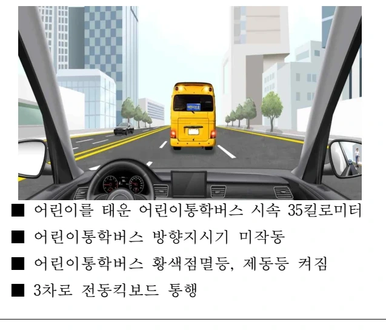

793. 想要在下图所示的道路通行时，下列选项中哪两项是正确的驾驶方法？

- ①因为儿童校车可能会变道至左侧车道，所以减速并与其维持安全距离。
- ②因为儿童校车制动和减速，所以按照超车的方法安全地超车到其前方。
- ③边注意三车道电动滑板车，边变道，从右侧超车。
- ④因为看不到儿童校车的两侧，所以不变道，减速并与其维持安全的距离。
- ⑤为提醒儿童校车驾驶人违反了最低限速，使用喇叭告知。
查看答案
答案
① 因为儿童校车可能会变道至左侧车道，所以减速并与其维持安全距离。
④ 因为看不到儿童校车的两侧，所以不变道，减速并与其维持安全的距离。
依据
《道路交通法》第五十一条（儿童校车的特别保护） ①儿童校车停在道路上，并有闪灯等装置动作提示儿童、婴儿上下车时，在儿童校车所停车道及紧邻车道上行驶的汽车驾驶人，必须在到达儿童校车前暂时停车，检查安全后缓慢行驶。 ② 第一项情况下，在无中心线的道路或每个方向只有一条车道的道路上，反方向行驶的汽车驾驶员也必须在到达儿童校车前暂时停车并检查安全后再缓慢行驶。 ③ 任何车辆驾驶员不得超越在道路上行驶且带有载有儿童或婴儿标志的儿童校车。汽车及汽车零部件性能和标准规定。第四十八条（其他照明标准） 第四款 运送儿童的客车必须配备符合下列标准的指示灯。 5. 当试图在道路上停车或起步时，必须符合以下标准。在道路上停车时，驾驶员必须能够操作黄灯或黄灯闪烁。由于儿童校车的黄色闪烁灯正在运行，因此儿童校车可能正在道路右侧边缘停车。因此，儿童校车的速度可能会出乎预料地急剧降低。另外，由于儿童校车的高度，前方能见度有限，因此您不应预测前方的交通状况会安全。
依据文字为学习用机器翻译。